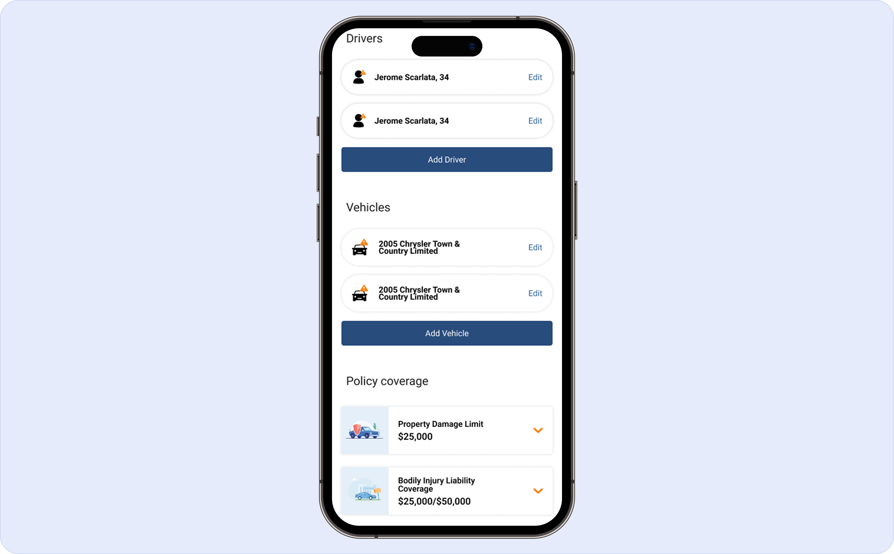

One screen for drivers, vehicles, and coverage.
In the original flow, drivers, vehicles, and policy coverage lived in three separate sections. Users had to navigate between them to build a complete picture of their quote — losing context with every transition and often unsure whether a change in one section affected another.
The redesign consolidated all three onto a single screen. Users get full visibility at once: who's on the policy, what vehicles are covered, and what coverage is selected — all in one view. No round-trips, no mental juggling between sections. The cognitive load of "managing a quote" collapses into a single review.
The pre-populated cards — pulled from the scan API — meant users were confirming rather than entering. That shift in interaction model, combined with the consolidated layout, made the heaviest part of the old flow feel almost effortless.
